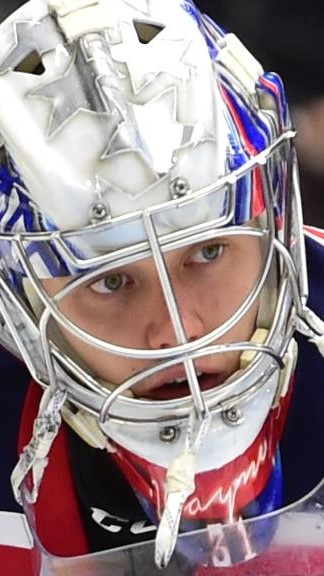
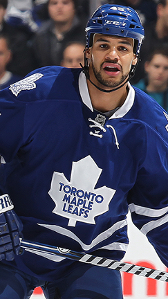
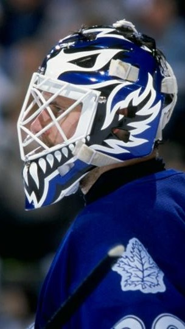

.jpg)
Matthews, Maple Leafs defeat Jets in overtime to end losing streak
TORONTO -- Auston Matthews scored 59 seconds into overtime and the Toronto Maple Leafs ended a three-game losing streak with a 4-3 win against the Winnipeg Jets at Scotiabank Arena on Thursday. Matthews took a pass from Morgan Rielly and shot over Connor Hellebuyck's glove for his NHL-leading 21st goal. "I just tried to sell shot and take it to the backhand and tried to find some open net," Matthews said.

Flames hold off Canadiens in Sutter's debut as coach
CALGARY -- The Calgary Flames won in Darryl Sutter's debut as coach, 2-1 against the Montreal Canadiens at Scotiabank Saddledome on Thursday. Sutter, who replaced Geoff Ward on March 4, is in his second tenure with the Flames. He was 107-73-15 with 15 ties in three seasons as their coach from 2002-06, including advancing to the Stanley Cup Final in 2004, and was their general manager from 2003-10. "Every win ... there's lots of them," Sutter said. "They're all the same. You take it and get ready for the next one."

Maple Leafs & MLSE Appoint Mark Fraser and Justin Bobb to New Roles
The Toronto Maple Leafs and Maple Leaf Sports & Entertainment (MLSE) announced today the appointment of Maple Leafs alumnus Mark Fraser to the role of Player Development, Equity, Diversity and Inclusion and Justin Bobb as Director, Equity, Diversity and Inclusion - Team Strategy. Fraser will begin March 1, 2021 and will report into the Maple Leafs front office and MLSE's Senior Vice-President of Equity, Diversity and Inclusion, Teri Dennis-Davies. The Ottawa native will work directly with the players and staff within all MLSE teams as the EDI department looks to further educate and bring positive change within its teams and the community.
